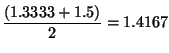

Programming Languages
Assignment 3
Read: Scott
Finish
reading Chapter 11 and 7.8
("Check your
understanding" q:6-14)
Useful links
Due during class, Mon., Feb. 5: Friday Feb 9.
- What is the runtime implementation of lists in Prolog?
(i.e. What goes on underneath the hood?)
- What is the "Test
and Generate" programming idiom?
- What/How does the select/3
predicate mean/behave?
-
"Send more money" is a well-known puzzle. Each of the letters
D,E,M,N,O,R,S and Y represents a different digit. Moreover, when each
letter is mapped to its corresponding digit the equation SEND + MORE =
MONEY holds. Below is a very naive . Since there are 8 letters to be
solved, it simply explore the 10*9*...*3 mappings of letters to
digits. Why is this an example of a problem that can be solved using the "Test
and Generate" programming idiom.
Due during class, Fri., Feb. 9 ., Monday Feb 12
- Define a clause append3DL
that
concatenates three difference lists:
?-
append3DL(
[z,y|A] - A, [x,w | B] -B, [u,v | C] - C, What).
What = [z, y,
x, w, u, v | _n] - _n
yes
- Define a clause simp(Var, Value, Vars)
that given a list
Vars of variables and their values unifies the Value with the current
value of Var. Vars has the form [x/5, y/10], where x is an
atomic
representing a variable and '/' is the separator for the associated
numerical value. {Hint try using member and pattern matching} {Include this rule in
problem 6 below.}
?- Vars=[x/5, y/10],
simp(x,VX,Vars), simp(y,VY,Vars).
Vars = [x/5, y/10]
VX = 5
VY = 10
Yes
Due: Feb 12 at 10:30 Feb 14 at 10:30 in the course file cabinet.
Finish the programming problems in XXXas3.pl
(rename file)
In the programming assignment you will see this problem:
Define a procedure
powerset(+Set,-PowerSet),given
a Set, represented by a list, it creates the powerset of Set. i.e.
?- powerset([],X).
X = [[]]
?- powerset([1],X).
X = [[],[1]] % order of sets not important
?- powerset([a,b],P).
P = [[a,b], [a], [b], []]
% order of sets not important?- powerset(S,[[a],[b],[a,b],[]]).
%%% May run out of stack ... YOUr code does
not need
%%% to work for this query.
?- powerset([a,b],[[a],[b],[a,b],[]]).
%%% may run out of stack ... YOUr code does
not need
%%% to work for this query.
?- powersetA([a,b,c],P). %A different version
P = [[], [a], [b], [a, b], [c], [a, c], [b, c], [a|...]] (user types "w" here)
P = [[], [a], [b], [a, b], [c], [a, c], [b, c], [a, b, c]]
Use the ideas provided by the following induction proof:
Problem: If S is a finite set with n elements, then S has 2n
distinct subsets.
Proof:
Basis Step:
If
n = 0, then
S = 
. Hence it has exactly one
subset, namely . Since 2
0=1 , the statement holds for
n = 0.
Induction:
Assume that a set with n elements has 2n distinct subsets.
----- Induction Hypothesis
To prove that this holds for n+1, first try to express the number of subsets of
S of size n+1 in terms of that of a set of size n
so that the induction hypothesis can be used.
For that we use the following claim without a rigorous proof.
Claim: | (T) |
= 2 * | (S) | , if T is obtained from S
by adding one more element, where
(A)
denotes the powerset of a set A .
Let us
illustrate the basic idea of this claim with a simple example.
Let S = {1,2} . Then the subsets of S are , {1}, {2},
and {1,2} . These subsets can be grouped into two groups: and {1} in one group, and {2} and {1,2} in the other. The sets in the
first group do not contain 2 while the ones in the second group contain 2.
Also there is an obvious bijection between these two groups: Adding the element 2
to each
set in the first group produces a unique set in the second group, and deleting 2 from
each set of the second group produces a unique set in the first group.
Furthermore the sets of the first group are the subsets of {1} that is S -{2} . Thus the subsets of S have been expressed in terms of the subsets of S -{2} and
S can be seen to have twice as many subsets as S -{2} .
The proof of the inductive step is a straightforward application of this
claim.
Let S be a set with n+1 elements and let x be an arbitrary element of S. (T)
denotes the set of subsets of a set T .
Then a set in (S) not containing x is a member of
(S-{x})
,
and conversely,
a member of
(S-{x})
is a member of (S) that does not contain x.
Also
a set in (S) containing x is a member of
(S-{x}) "plus x" and conversely,
a member of
(S-{x})
"plus x"
is a member of (S) that contains x.
Thus altogether there are twice as many sets in
(S)
as in
(S-{x}).
But by the induction hypothesis
(S -{x})
has 2n elements. Hence S has 2n+1 subsets.
End of Proof
(from: http://www.cs.odu.edu/~toida/nerzic/content/induction/example6/example6.html)
Homework
policy
General
Submission Instructions